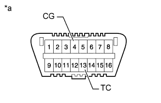
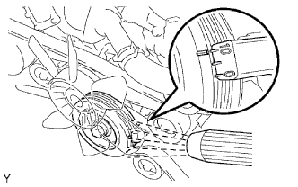
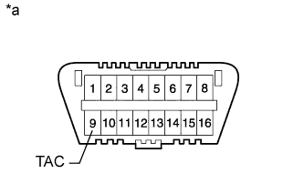

ДВИГАТЕЛЬ > ПРОВЕРКА БЕЗ СНЯТИЯ С АВТОМОБИЛЯ |
| 1. ПРОВЕРЬТЕ УГОЛ ОПЕРЕЖЕНИЯ ЗАЖИГАНИЯ |
Прогрейте двигатель.
Если используется портативный диагностический прибор:
Подсоедините портативный диагностический прибор к DLC3.
Войдите в следующие меню: Powertrain / Engine and ECT / Data List / All Data / IGN Advance.
Проверьте угол опережения зажигания на холостых оборотах.
Убедитесь в том, что угол опережения зажигания возрастает сразу после увеличения частоты вращения коленчатого вала двигателя.
|  |
Если портативный диагностический прибор не используется:
С помощью SST соедините контакты 13 (TC) и 4 (CG) на DLC3.
| *a | Вид спереди разъема DLC3 |
Подсоедините щуп стробоскопа к проводу разъема катушки зажигания, идущему к цилиндру № 1.
|  |
Проверьте угол опережения зажигания на холостых оборотах.
Отсоедините SST от DLC3.
Проверьте угол опережения зажигания на холостых оборотах.
Отсоедините стробоскоп от двигателя.
| 2. ПРОВЕРЬТЕ ЧАСТОТУ ВРАЩЕНИЯ КОЛЕНЧАТОГО ВАЛА ДВИГАТЕЛЯ НА ХОЛОСТОМ ХОДУ |
Прогрейте двигатель.
Если используется портативный диагностический прибор:
Подсоедините портативный диагностический прибор к DLC3.
Войдите в следующие меню: Powertrain / Engine and ECT / Data List / All Data / Engine Speed.
Проверьте частоту вращения коленчатого вала двигателя на холостом ходу.
|  |
Если портативный диагностический прибор не используется:
Подсоедините SST к контакту 9 (TAC) разъема DLC3.
| *a | Вид спереди разъема DLC3 |
Дайте двигателю поработать с частотой вращения коленчатого вала 2500 об/мин в течение примерно 90 с.
Проверьте частоту вращения коленчатого вала двигателя на холостом ходу.
| 3. ПРОВЕРЬТЕ КОМПРЕССИЮ |
Прогрейте и выключите двигатель.
Снимите расширительный бачок на впуске воздуха (Нажмите здесь).
Снимите 6 свечей зажигания (Нажмите здесь).
Отсоедините 6 разъемов топливных форсунок.
Проверьте давление компрессии в цилиндре.
Вставьте компрессометр в отверстие для свечи зажигания. (Процедура A)
С помощью стартера прокрутите двигатель и измерьте давление компрессии. (Процедура B)
Повторите операции A и B для каждого цилиндра.
Если компрессия в цилиндре мала, залейте в цилиндр небольшое количество моторного масла через отверстие для свечи зажигания и повторите операции A и B для цилиндров с низкой компрессией.
Подсоедините 6 разъемов форсунок.
Установите 6 свечей зажигания (Нажмите здесь).
Установите расширительный бачок на впуске воздуха (Нажмите здесь).
| 4. ПРОВЕРЬТЕ СОДЕРЖАНИЕ CO/CH |
Запустите двигатель.
Запустите двигатель на оборотах 2500 об/мин и дайте ему поработать, по крайней мере, в течение 180 секунд.
В режиме холостого хода двигателя вставьте пробник газоанализатора для определения содержания CO/CH в выхлопную трубу не менее чем на 40 см (1,31 фута).
Немедленно проверьте концентрацию CO/CH при работе двигателя на холостом ходу и/или при частоте вращения коленчатого вала двигателя 2500 об/мин.
Если концентрация CO/CH не соответствует местным нормам, выполните поиск неисправности и устраните ее в порядке, указанном ниже.
Проверьте работу датчика A/F (Нажмите здесь) и подогреваемого кислородного датчика (Нажмите здесь).
В таблице ниже перечислены возможные неисправности. Проведите проверку и при необходимости устраните причины неисправности.
| CO | CH | Признак | Причины |
| Нормальная | Высокая | Неравномерный холостой ход |
|
| Низкая | Высокая | Неравномерный холостой ход (Колебания значения СH) |
|
| Высокая | Высокая | Неравномерный холостой ход (Из выпускной трубы идет черный дым) |
|